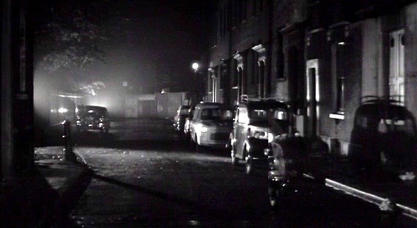
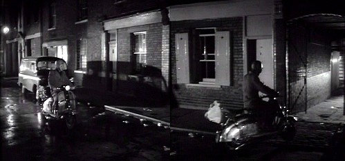
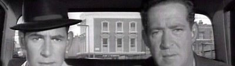
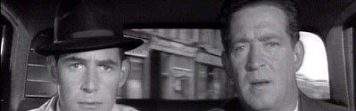
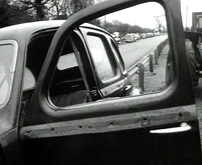
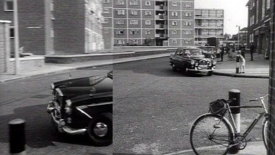

|
|
HELP FIND THE FOLLOWING LOCATIONS
PAGE 12
GIDEON’S WAY:
The Firebug (Roy Baker: September 1964)
Junction of Southam Street and Kensal Road, Kensal Town, London W10
- Keen sets off on his borrowed bicycle.
(Found with the help of Geoff Dodd, November 2021)


 Also
junsiton of Kensal Place/Edenham
Street, London W10 in the same sequence
Also
junsiton of Kensal Place/Edenham
Street, London W10 in the same sequence
St Pancras
Cemetery, Camden, London N2 -
The funeral of Constable Jarvis, Bishop () and Gideon () are both
present.
Identified by Mandy Cox of the 'Unidentified photos of the British
Isles' Facebook group, November 2021

Willes Road, NW5 - Tom Bishop (George Cole) goes
back to his digs (23 Willes
Road) with the new scooter.
Identified by Paul Canty,
January 2011

Unknown 1 - Tom Bishop (George Cole) goes to the Atlas Paint co to start a fire.


Pancras Road, London, NW1-
Gideon follows ( looking north towards the junction with Crowndale Road
with the tower of St Pancras Hospital visible in the background) **
(Identified by Geoff Dodd, February 2024)

Golborne
Road, W10
- Gideon and Keen back on the trail
of Tom Bishop again (back projection featuring the Golborne
Grove at the Southam Street junction).
(Identified by Marishka von Saatz, July 2012)




 Could
be Golbourne
Road, with Earl of Warwick in the background.
Could
be Golbourne
Road, with Earl of Warwick in the background.
Unknown 3 - Keen reverses the car out of the cul-de-sac.
 GIDEON’S WAY: The
Reluctant Witness
(Jeremy Summers, April 1965)
GIDEON’S WAY: The
Reluctant Witness
(Jeremy Summers, April 1965)Unknown 1- Car yard Red Carter (Mike Pratt) and Syd Carter (David Gregory) go to scrap yard to buy log books from wrecked cars. They are observed by Tiny Bray (Frederick Peisley).


 Could
be P7
Could
be P7
Riley Road, London, SE1 - All available cars are called into the area.
Identified by Geoff Dodd, February 2024

Think you know a spot? Need a bigger image? Email me.
< Previous | Index | Avengerland | Next >
Copyright © 2003 Anthony R. McKay